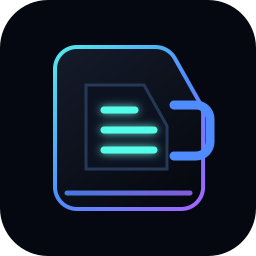

Adapter mode
USB NCM
The laptop should see the flashed dongle as a USB Ethernet-style adapter using the host CDC-NCM driver.
- Chip
- ESP32-S3
- Board
- T-Dongle S3
- Driver
- cdc_ncm

Public deck pack
Flash a LilyGO T-Dongle S3 into a USB NCM virtual network adapter for mobile deck control workflows.
Adapter mode
The laptop should see the flashed dongle as a USB Ethernet-style adapter using the host CDC-NCM driver.
Deck install
Add the marketplace index URL to the deck to pull this pack without editing built-in app lists.
loading...
Pairing console
For pairing, plug in the T-Dongle running CyberDeck Link, join its bridge, then open the local web UI. That UI handles pair, send, receive, and settings save commands for the T-Deck.
waiting for local dongle UI...
Build bundle
waiting for installer...